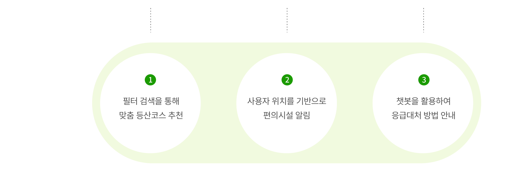

Suji Kim
KOREA POLYTECHNIC UNIVERSITY
Convergence Design
UX/UI
······· App
······· App
······· App
Service Design
······· Public Design
······· Concept Design
Video
······· After Effects
······· Cinema 4D
FUN PICK
맞춤형 등산추천과 응급상황시 도움요청 서비스
작업 구분
기여도
작업 시기
팀 프로젝트
기획, 화면설계, GUI
19.04 ~ 19.06 (2months)
Problem
Challenge
Research
Solution
